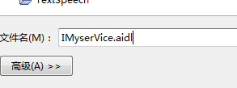
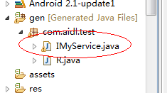

Android 使用【AIDL】调用外部服务
在Android 中有一种服务说是服务其实倒不如说是一个接口，这个接口名为：Android Interface Definition Language ，这个接口可提供跨进程访问服务，英文缩写为:AIDL。
此种服务的好处在于，多个应用程序之间建立共同的服务机制，通过AIDL在不同应用程序之间达到数据的共享和数据相互操作，下面将通过一个DEMO 演示AIDL 是如何为应用程序之间提供服务的。
本文大纲为：
1、创建AIDL 服务端。2、创建AIDL 客户端。
3、客户端调用服务端提供的服务接口。
4、小结。
本文要实现的功能大致如下：创建AIDL服务端，此服务端将提供一个Student的javabean提供客户端取得数据，因为aidl支持的数据类型比较简单，故这里建议把常用的数据类型的数据写入服务。
1、创建AIDL 服务端
在Android 的src 文件夹下的任意包里面新建文件，后缀名为*.aidl，如下图

import java.util.Map;interface IMyService {
Map getMap(String test_class, Student student);
Student getStudent();
}
Student 类是一个序列化的类，这里使用Parcelable 接口来序列化是Google 提供的一个比Serializable 效率更高的序列化类。Student 类代码如下：
import android.os.Parcel;import android.os.Parcelable;
public class Student implements Parcelable {
private int age;
private String name;
public int getAge() {
return age;
}
public void setAge(int age) {
this.age = age;
}
public String getName() {
return name;
}
public void setName(String name) {
this.name = name;
}
public static final Parcelable.Creator<Student> CREATOR = new Creator<Student>() {
@Override
public Student[] newArray(int size) {
return new Student[size];
}
@Override
public Student createFromParcel(Parcel source) {
return new Student(source);
}
};
public Student() {
}
public Student(Parcel pl) {
age = pl.readInt();
name = pl.readString();
}
@Override
public int describeContents() {
return 0;
}
@Override
public void writeToParcel(Parcel dest, int flags) {
// TODO Auto-generated method stub
dest.writeInt(age);
dest.writeString(name);
}
}
在这里必须注意，编写javabean时必须注意如下三点：
在Student 类中必须有一个静态常量，常量名必须是CREATOR，而且CREATOR 常量的数据类型必须是 Parcelable.Creator
在writeToParcel 方法中需要将要序列化的值写入到 Parcel对象中。
编写完Student 为时，必须再新建一个Student.aidl 文件，此文件输入以下内容：
parcelable Student; 这里的书写是供上面我们说过的接口 *.aidl 文件导包时可以找到，并通过此文件找到Student类对象。
如果上面的步骤顺利通过的话，Android 将会自动在gen 目录下R文件的相同目录生成一个以*.aidl 文件命名的*.java 文件，如下图：

顺利生成成功后，我们再来编写一个AIDL 服务类，代码如下：
import java.util.HashMap;import java.util.Map;
import android.app.Service;
import android.content.Intent;
import android.os.IBinder;
import android.os.RemoteException;
public class MyService extends Service {
@Override
public IBinder onBind(Intent intent) {
return new MyServiceimpl();
}
public class MyServiceimpl extends IMyService.Stub {
@Override
public Student getStudent() throws RemoteException {
Student st = new Student();
st.setAge(18);
st.setName("terry");
return st;
}
@Override
public Map getMap(String testClass, Student student)
throws RemoteException {
Map<String, Object> map = new HashMap<String, Object>();
map.put("class", "五年级");
map.put("age", student.getAge());
map.put("name", student.getName());
return map;
}
}
}
如上代码，MyService 服务类有一个子类并继承自我们上面生成的*.java 文件重写其中我们在*.aidl 中声明的两个接口方法，实现了其功能。上面IBinder 必须返回此服务类的子类对象，否则客户端将无法获得服务对象。
最后，即然有服务的操作，那么就得在manifest文件中注册服务类，代码如下：
<service android:name=".MyService"><intent-filter>
<action android:name="com.aidl.test.IMyService"></action>
</intent-filter>
</service>
至此，服务端就己经开发完成了，下面接着开发客启端。